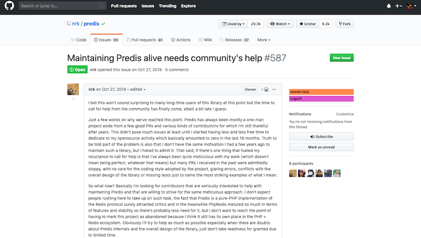

Effective Redis
Good Morning!
I'm Matt.
It's nice to meet you.
Thank you for attending.
Live Tweeting
Shameless Self-Plugs
Obligatory Work Plug
Now hiring a Senior Software Engineer for my team
Presumptions
- You know the basics of PHP including how to use its object model
- You may have worked with PDO, SQL, relational databases, memcached, or Redis
- You want to learn about caching, data structures, key-value stores, or NoSQL databases
Questions or Feedback?
- Ask questions during or after the session
- Contact me: matthewturland.com/contact
- Leave feedback: joind.in/talk/1dd1f
Slides
Let Me Tell You a Story
Caching Books
"Can you cache the books listed on the home page?
Redis
Redis is an open source (BSD licensed), in-memory data structure store, used as database, cache and message broker.redis.io
Installing Redis
- Windows: check out the Microsoft port
- Linux: install
redis-serverpackage via apt et al. - OS X: install
redispackage via Homebrew - Build it yourself: requires
build-essentialapt package or the equivalent - More info on the Redis download page
Redis Documentation
Connecting with CLI client
redis-cliredis-cli -h 127.0.0.1 -p 6379Predis
Predis is a flexible and feature-complete Redis client library for PHP >= 5.3.github.com/nrk/predis
Installing Predis
Just use Composer.
composer install predis/predisPredis Documentation
Could be better. Tour, examples, or tests.

Connecting with Predis
Just instantiate the client.
$redis = new \Predis\Client;
Simple Caching Example
$redis = new \Predis\Client;
$cached_books = $redis->get('home_page_books');
if (empty($cached_books)) {
$pdo = new \PDO('...');
$books = $pdo->query('...')->fetchAll();
$redis->set('home_page_books', serialize($books));
} else {
$books = unserialize($cached_books);
}
Notes on Debugging
$ redis-cli
127.0.0.1:6379> KEYS *
1) "foo"
[snip]
127.0.0.1:6379> KEYS book_*
1) "book_12345"
[snip]
127.0.0.1:6379> TYPE book_12345
hash
Problem #1
Boss:
What happens if we update data for any of these books?
You:
We'd be presenting stale cached data to the end user.
Boss:
Cache Books Individually
$cached_book = $redis->get('book_12345');
if (empty($cached_book)) {
$book = $pdo->query('...')->fetch(\PDO::FETCH_ASSOC);
$redis->set('book_12345', serialize($book));
} else {
$book = unserialize($cached_book);
}
Write Book Identifiers to a List
// Prepend the book to the list
$redis->lpush('home_page_books', '12345');
// Append the book to the list
$redis->rpush('home_page_books', '12345');
// Replace the first book in the list with this book
$redis->lset('home_page_books', 0, '12345');
// Add the book to the list before or after another book
$redis->linsert('home_page_books', 'BEFORE', '67890', '12345');
// Remove all instances of the book from the list
$redis->lrem('home_page_books', 0, '12345');
Read Books Using the List
$book_keys = array_map(
function ($id) { return 'book_' . $id; },
$redis->lrange('home_page_books', 0, -1)
);
$cached_books = $redis->mget($book_keys);
$books = array_map('unserialize', $cached_books);
Notes about Lists
- Elements are ordered / sorted
- Allow duplicate elements
- Similar to enumerated arrays
- Useful for iteration and pagination
- Can be used to implement job queues - check out Gary Hockin's talk
Problem #2
Boss:
Our network seems really saturated with traffic.
You:
We're caching all available data per book
and retrieving it every time we need any of it.
Boss:
Cache Books in Hashes
$book = $redis->hgetall('book_12345');
// or
$book = $redis->hmget('book_12345', ['title', 'author', 'price']);
if (empty($book)) {
$book = $pdo->query('...')->fetch(\PDO::FETCH_ASSOC);
$redis->hmset('book_12345', $book);
}
Notes about Hashes
- Elements are technically not ordered / sorted
- Every element has a unique associated key
- Similar to associative arrays
- Useful for storing key-value pairs with a common association
Problem #3
Boss:
We want the individual book page to show a section with other
books ordered by customers who ordered that book. Can we do that?
Store Ordered Books in Sets
// Someone who ordered book 12345 also ordered book 67890
$redis->sadd('ordered_12345', '67890');
// Get identifiers of all books ordered with book 12345
$ordered_books = $redis->smembers('ordered_12345');
// Get identifier for a random book ordered with book 12345
$ordered_book = $redis->srandmember('ordered_12345');
Problem #4
Boss:
We want the shopping cart page to show a section with other books
ordered by customers who ordered all the books in the cart. Can
we do that?
Intersect Ordered Book Sets
// Assuming these values:
$ordered_12345 = $redis->smembers('ordered_12345'); // ['23456', '34567']
$ordered_67890 = $redis->smembers('ordered_67890'); // ['34567', '45678']
// Get other books ordered with books 12345 and 67890
$ordered_books = $redis->sinter('ordered_12345', 'ordered_67890');
// $ordered_books is now assigned ['34567']
Other Set Operations
// Assuming these values:
$ordered_12345 = $redis->smembers('ordered_12345'); // ['23456', '34567']
$ordered_67890 = $redis->smembers('ordered_67890'); // ['34567', '45678']
// Get books ordered with book 12345 but not with book 67890
$ordered_12345 = $redis->sdiff('ordered_12345', 'ordered_67890');
// ['23456']
// Get books ordered with either of books 12345 and 67890
$ordered_12345 = $redis->sunion('ordered_12345', 'ordered_67890');
// ['23456', '34567', '45678']
Notes about Sets
- Elements are not ordered / sorted
- Not really designed for direct access
- Only contain unique elements, duplicates are ignored
- Useful for operations related to membership within groups of elements
Problem #5
Boss:
Oh, wait, I forgot, we also want the ordered books sorted by how
many times they've been ordered. Can we do that?
Store Books in Sorted Sets
// Add a book ordered with book 12345 for the first time
$rank = $redis->zscore('ordered_12345', '67890');
if ($rank === null) {
$redis->zadd('ordered_12345', 1, '67890');
} else {
$redis->zincrby('ordered_12345', 1, '67890');
}
// Or, with Redis >= 3
$redis->zadd('ordered_12345', 'INCR', 1, '67890');
Get Books by Order Score
// Get books ordered with book 12345...
// ... sorted with MOST orders first
$ordered_books = $redis->zrevrange('ordered_12345');
// ... sorted with LEAST orders first
$ordered_books = $redis->zrange('ordered_12345');
// ... at least twice, sorted with MOST orders first
$ordered_books = $redis->zrevrangebyscore('ordered_12345', 2, '+inf');
// ... at least twice, sorted with LEAST orders first
$ordered_books = $redis->zrangebyscore('ordered_12345', 2, '+inf');
Problem #6
Boss:
We're storing a lot of book data in Redis and running out of
memory.
You:
We're storing a lot of binary flags in the book hashes.
Storing User Flags using Bitmaps
// Enable the 8th flag for book 12345
$redis->setbit('book_12345_flags', 7, 1);
// Disable the 4th flag for book 12345
$redis->setbit('book_12345_flags', 3, 0);
// Get the value of the 8th flag for book 12345
$flag = $redis->getbit('book_12345_flags', 7);
BIT commands in Redis commands for strings
Problem #7
Boss:
Book database queries are spiking and ordered books are no longer
being updated in Redis.
You:
FUUUUUUUU...
Checking Memory Usage
$ redis-cli
127.0.0.1:6379> INFO
...
# Memory
used_memory:104857600
used_memory_human:100M
...
127.0.0.1:6379> CONFIG GET maxmemory
100mb
Expiring Data
// Delete an element by key
$redis->del('ordered_12345');
// Expire an element one minute from now
$redis->expire('ordered_12345', 60);
// Same thing, but with a specific time
$redis->expireat('ordered_12345', time() + 60);
// Remove any set expiration time
$redis->persist('ordered_12345');
// Get remaining seconds before expiration
$expires_in = $redis->ttl('ordered_12345');
Problem #8
Boss:
When we use multiple Redis commands in one place, it seems to slow
our page load times.
You:
We're making network round trips for each command we send.
Pipelining
$responses = $redis->pipeline(function ($pipe) {
$pipe->sadd('ordered_12345', '67890');
$pipe->smembers('ordered_12345');
});
// or
$responses = $redis->pipeline()
->sadd('ordered_12345', '67890')
->smembers('ordered_12345')
->execute();
Problem #9
Boss:
Redis went down last night. There are now instances where some keys
related to other keys are missing.
You:
We're not using transactions.
Transactions
$responses = $redis->transaction(function ($tx) {
$tx->del('ordered_12345');
$tx->sadd('ordered_12345', '67890');
// ...
});
// or
$responses = $redis->transaction()
->del('ordered_12345')
->sadd('ordered_12345', '67890')
->execute();
Problem #10
Boss:
We want to audit what we're storing in Redis. Create a report.
Keyspace Iterators
You can use SCAN /
SSCAN /
HSCAN /
ZSCAN, or...
// Equivalent to using SCAN
use Predis\Collection\Iterator\Keyspace;
foreach (new Keyspace($redis, 'book_*') as $key) {
$book = $redis->hgetall($key);
// ...
}
Other Cool Stuff
- Distributed locks
- Geohashes
- Pub/sub
- Custom scripting
- Lots more!
Predis Needs Help

That's All, Folks
- Questions? Comments? Discussion?
- stacksports.com
- matthewturland.com for slides
- E-mail: me@matthewturland.com
- Twitter: @elazar
- GitHub: elazar
- Freenode: Elazar
Feedback
Please rate my talk!
Also, check out the joind.in mobile apps!